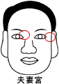

夫妻�m |
（眼晴的尾部�~尾及�~尾外�燃殚T部位） |

一：若低陷肉薄的人
1．婚姻生活易生障�K、不易�f�{。
2．婚姻有���}��防止�x婚。
二：若��其上有十字�y的人
1．��打老婆，而且��老婆很凶。
2．防止婚姻有始�o�K。
三：若���~尾蚊的人
1．此人�诼怠�
2．性神��衰弱、不能持久的人。
四：若��黑痣的人
1．易搞七捻三，有�w妻或夫易
兼猜差。
2．若�氖����肥��I，�t人��特�e好。
五：若��青筋的人
1．配偶必�w弱多病。
2．性冷惑不�f�{之象。
六：若��眼尾朝下的人
1．此人吝��
2．小心��性�m�p、��造婚姻不幸。
七：眼尾可看出情�w平定否、眼尾垂�t易��、眼尾上�N、�t是感�X敏�J、性�w激昂、有���狻⒂性��t。
八：若眼尾肌肉�S�M、�馍�光��明�r的人。
1．配偶相����慧�t淑。
2．夫妻生活美�M、感情佳。
�湓]：
１．女人失���r�~尾部��有一�颖〖t。
２．�~尾�y�扇��l�^好，如果只有一�l，表示其人��性��害，出�F多而�t�橐��y之相。
３．�~尾色暗而�岬娜嘶蛴叙耄�雀斑、疤痕、�[、病，表示有色�y或感情�m葛、��婚姻欠缺忠�\故
�y偕白首。